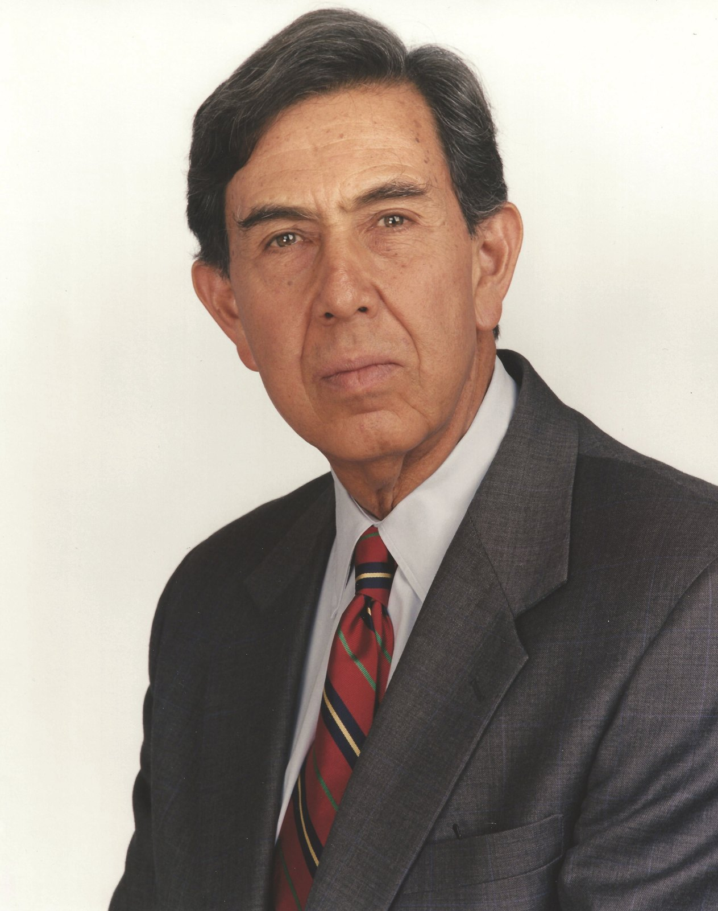
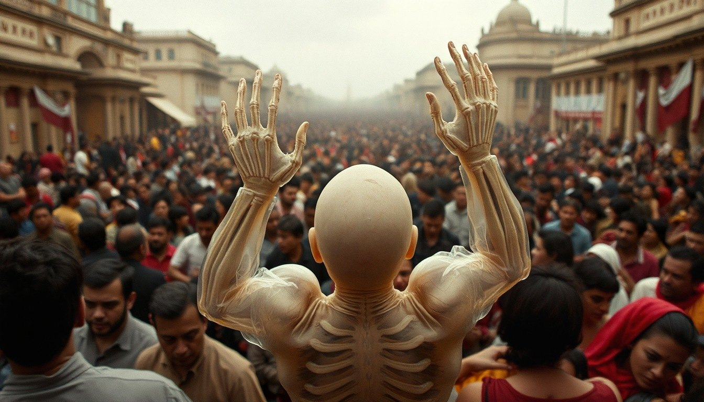

OKpolítico
OKpolíticoOliver Ken explica

Renuncia de Guadalupe Taddei y la nueva presidenta del INE
En este video de OKpolítico explicamos la renuncia de Guadalupe Taddei del INE, los contratos cuestionados, la “limpia” interna encabezada por Blanca Yassahara Cruz García y el pro
31 de octubre de 2026Exceso de naturalizados en Liga MX: Hugo Sánchez vs dirigentes
Hugo Sánchez acusa a los dirigentes de la Liga MX de saturar la Selección con jugadores naturalizados. Analizamos la regla 10/8, el caso de Juan Brunetta, estadísticas de naturaliz
30 de octubre de 2026
Cuauhtémoc Cárdenas: Vida y Legado Político
El histórico político mexicano Cuauhtémoc Cárdenas falleció a los 92 años el 28 de octubre de 2026 en la Ciudad de México, tras una larga batalla contra el cáncer.
28 de octubre de 2026Fobaproa: La deuda que México pagará hasta 2070
Explicamos el Fobaproa: el rescate bancario de 1998 que convirtió 552 mil mdp de deuda privada en pública (12.6% PIB). Contrastamos la versión oficial con auditorías (ASF), banco c
29 de octubre de 2026El sistema de pensiones en México explicado desde cero
Entiende cómo funcionan las pensiones en México, su origen en las reformas legales y los datos recientes sobre cobertura. Basado en datos oficiales de la CONSAR, Society of Actuari
28 de octubre de 2026Crisis en el INE: La renuncia de Guadalupe Taddei
Guadalupe Taddei renuncia a la presidencia del INE en medio de una crisis por presuntos actos de corrupción y conflictos de interés. En este video de OKpolítico explica, analizamos
28 de octubre de 2026El Halconazo: Expediente de una masacre impune
En este análisis detallado de OKpolítico revisamos los expedientes, documentos oficiales, posturas y contradicciones en torno a la matanza del 10 de junio de 1971, conocido como El
27 de octubre de 2026
Tlatelolco 1968: El expediente del 2 de octubre
Un análisis documental sobre los hechos ocurridos el 2 de octubre de 1968 en la Plaza de las Tres Culturas de Tlatelolco. Examinamos el contexto del movimiento estudiantil, la narr
25 de octubre de 2026
Crisis en el INE: piden renuncia a Guadalupe Taddei
En este video de OKpolítico explica, desglosamos la confrontación surgida en el Consejo General del Instituto Nacional Electoral (INE). Representantes del PRI y de Somos MX exigier
24 de octubre de 2026
Lucio Cabañas: 50 años entre la guerrilla y la Guerra Sucia
A 50 años de la muerte del profesor normalista y líder guerrillero Lucio Cabañas Barrientos en la sierra de Tecpán, OKpolítico explica las causas de su levantamiento armado y las c
23 de octubre de 2026
Maximiliano I de México: el archiduque liberal y el Segundo Imperio
En este video de OKpolítico explica analizamos la trayectoria de Maximiliano I de Habsburgo y el desarrollo del Segundo Imperio Mexicano (1864-1867).
19 de octubre de 2026
El caso Posadas Ocampo: fuego cruzado o crimen premeditado
El 24 de mayo de 1993, el cardenal Juan Jesús Posadas Ocampo fue acribillado junto a seis personas en el Aeropuerto Internacional de Guadalajara. Durante décadas, el caso ha estado
18 de octubre de 2026
Álvaro Obregón: ascenso militar, presidencia y magnicidio
Álvaro Obregón fue una de las figuras determinantes de la Revolución mexicana y de la reconstrucción institucional del país. Como militar, derrotó a la División del Norte en las ba
17 de octubre de 2026
El expediente Ruiz Massieu: un crimen sin autor intelectual sentenciado
En este episodio de OKpolítico explica, revisamos el expediente penal y político del asesinato de José Francisco Ruiz Massieu, perpetrado el 28 de septiembre de 1994 en la Ciudad d
11 de octubre de 2026